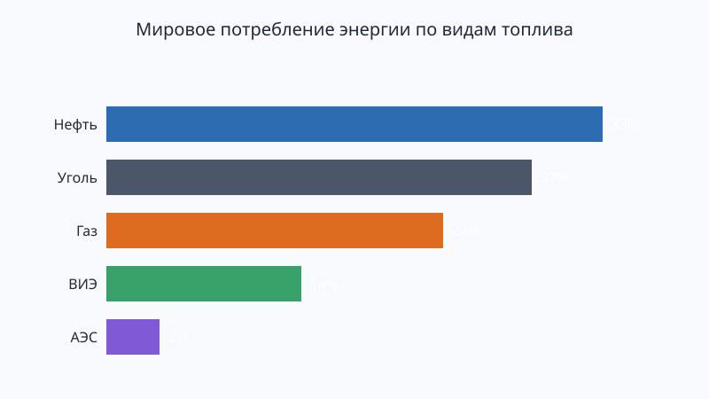
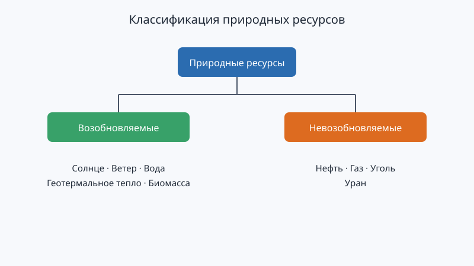
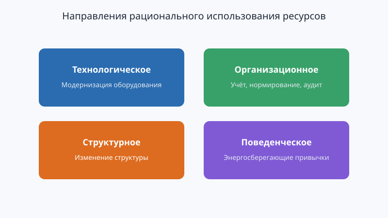

Глава 1. Энергосбережение и рациональное использование природных ресурсов
1.1 Понятие энергосбережения
Энергосбережение — это комплекс организационных, правовых, технических и экономических мер, направленных на снижение объёма потребления топливно-энергетических ресурсов (ТЭР) при сохранении полезного эффекта от их использования.
Близкое, но не тождественное понятие — энергетическая эффективность, которая характеризует отношение полезного эффекта к затратам энергии на его получение. Энергосбережение — это процесс и меры, а энергоэффективность — измеримая характеристика результата.
Ключевым инструментом государственной политики в этой сфере является энергетическое обследование (энергоаудит), по результатам которого оформляется энергетический паспорт объекта. В Российской Федерации базовый документ — Федеральный закон № 261-ФЗ «Об энергосбережении и о повышении энергетической эффективности».

Энергосбережение не означает отказ от энергии. Речь идёт о том, чтобы получать тот же полезный эффект (тепло, свет, движение, производство) при меньших затратах энергии. Это достигается модернизацией оборудования, улучшением учёта, изменением поведения и структуры потребления.
1.2 Природные ресурсы и их классификация
Природные ресурсы делятся на возобновляемые и невозобновляемые. Возобновляемые источники энергии (ВИЭ) восстанавливаются естественным путём в масштабах времени, соизмеримых с темпами их потребления человечеством. К ним относятся солнечное излучение, ветер, вода, геотермальное тепло, биомасса.
Невозобновляемые ресурсы — нефть, природный газ, уголь, уран — имеют конечные запасы и при современных темпах потребления истощаются. Именно поэтому развитие ВИЭ рассматривается как стратегическое направление энергетики.

Помимо деления по возобновляемости, ресурсы классифицируют по происхождению (минеральные, водные, земельные, биологические), по исчерпаемости и по возможности хозяйственного использования.
1.3 Пути рационального использования ресурсов
Рациональное использование природных и энергетических ресурсов реализуется по нескольким взаимодополняющим направлениям.
- Технологическое — модернизация оборудования, замена устаревших установок, внедрение энергоэффективных технологий.
- Организационное — нормирование потребления, приборный учёт, энергоаудит, энергосервисные контракты.
- Структурное — изменение структуры энергопотребления в пользу менее энергоёмких производств и ВИЭ.
- Поведенческое — энергосберегающие привычки персонала и бытовых потребителей.
Каждое из направлений даёт эффект, но наибольший результат достигается при их совместном применении — как показывает практика энергоаудитов и энергосервисных проектов.

Проверка знаний
-
Что такое энергосбережение?
Реализация организационных, правовых, технических и экономических мер, направленных на снижение объёма использования ТЭР при сохранении полезного эффекта.
-
Чем энергетическая эффективность отличается от энергосбережения?
Энергосбережение — это процесс и меры; энергоэффективность — измеримая характеристика отношения полезного эффекта к затратам энергии.
-
Что такое энергетический паспорт объекта?
Документ, содержащий сведения о фактическом и нормативном энергопотреблении, показателях энергоэффективности и потенциале энергосбережения.
-
Чем возобновляемые ресурсы отличаются от невозобновляемых?
Возобновляемые восстанавливаются естественным путём в соизмеримых с потреблением масштабах времени; невозобновляемые имеют конечные запасы и истощаются.
-
Назовите четыре направления рационального использования ресурсов.
Технологическое, организационное, структурное и поведенческое.
-
Какой федеральный закон регулирует энергосбережение в РФ?
Федеральный закон № 261-ФЗ «Об энергосбережении и о повышении энергетической эффективности».